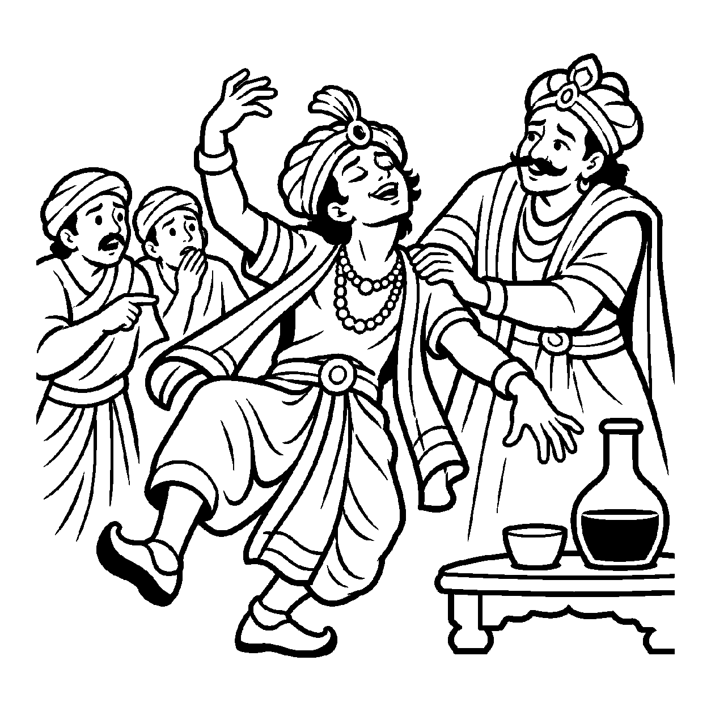

એક સ્વભાવે અત્યંત શાંત અને ભદ્ર પુરુષ જ્યારે કોઈના બળજબરીથી મદિરા (દારૂ) પી લે છે, ત્યારે તે રસ્તા પર લથડિયાં ખાવા લાગે છે અને અસંબદ્ધ બોલવા લાગે છે. લોકો કહે છે કે 'આ માણસ મતવાલો છે.' તે ક્ષણે તેનું વિકૃત વર્તન નકારી શકાતું નથી, છતાં તે વિકૃતિ મદિરાની બાહ્ય ઉપાધિને કારણે જન્મી છે. તેવી જ રીતે જ્યારે સંસારી આત્મા અનાદિકાળથી બંધાયેલા પૌદ્ગલિક કર્મોના વિપાક અને ઉદયનું નિમિત્ત પામીને વિભાવરૂપે વિકૃત થાય છે, ત્યારે કર્મોપાધિના પ્રભાવથી વિકૃત થયેલા તે સંસારી જીવનું વાણી દ્વારા પ્રતિપાદન કરવું કે — "જીવ ક્રોધી છે, જીવ સંસારી છે, જીવ મોહી છે" — તે 'ઉપાધિસાપેક્ષ અશુદ્ધ દ્રવ્યાર્થિક પ્રતિપાદક વ્યવહાર' કહેવાય છે.
આ નય દ્રવ્યાર્થિક પ્રતિપાદક વ્યવહાર છે. તે બતાવે છે કે જીવમાં જે અશુદ્ધિ છે તે કોઈ સ્વતંત્ર ત્રિકાળી સત્ય નથી, પણ પુદ્ગલકર્મોના વિપાકની સાપેક્ષતામાં પ્રગટેલો આગંતુક દોષ છે. આ વ્યવહાર જીવની વર્તમાન દુર્દશાનું સાચું કારણ સમજાવે છે કે આ દોષ આત્મામાં કેમ પેદા થયો.
જ્યારે જીવ સમજે છે કે મારી આ વિકૃતિ કેવળ કર્મની ઉપાધિને લીધે છે, ત્યારે તેનામાં કર્મ-બંધન તોડવાની અને નિર્દોષ થવાની આશા પ્રગટે છે.
કર્મોદય વિપાકથી, જીવ વિકૃત જણાય;
ઉપાધિ સાપેક્ષ વ્યવહારે, સંસાર પ્રથા ગણાય.
પર ઉપાધિ જાણીને, સાધક જાગૃત થાય;
કર્મ બંધન છેદતાં, મુક્તિ પંથે ધાય.
કર્મજન્ય ઔપાધિક વિકૃતિઓથી હિંમત હાર્યા વિના, કર્મબંધન તોડી નિષ્કલંક થવાનો પુરુષાર્થ જગાડવો.

ધર્મક્ષેત્રના એક આશાસ્પદ શિષ્ય વીરેન્દ્રકુમારના મનમાં સંસારના દુઃખો જોઈને ઘોર નિરાશા વ્યાપી ગઈ હતી. તેઓ જોતા કે જગતમાં કોઈ રોગી છે, કોઈ ક્રોધી છે, કોઈ નરકની ઘોર યાતના ભોગવે છે. વીરેન્દ્રકુમારે ગુરુદેવને પૂછ્યું: "ગુરુદેવ, જો આત્મા મૂળથી જ ભગવાન જેવો શુદ્ધ છે, તો પછી શાસ્ત્રોમાં આત્માને 'પાપી, ક્રોધી, નરકવાસી કે ત્રિર્યંચ' કેમ કહ્યો છે? શું આત્મા સાચે જ પાપી છે? જો આત્મા પોતે જ પાપી હોય તો શાસ્ત્રોના આ કથનને સાચું માનવું કે આત્મા શુદ્ધ છે તે માનવું?" આ પ્રશ્ને વીરેન્દ્રકુમારની શ્રદ્ધા ડગમગાવી દીધી હતી.
ગુરુદેવે વીરેન્દ્રકુમારને સ્નેહથી સમજાવતાં કહ્યું, "વીરેન્દ્ર, ઉપાધિસાપેક્ષ અશુદ્ધ દ્રવ્યાર્થિક પ્રતિપાદક વ્યવહારનું રહસ્ય સમજો! એક રાજાના કુમારને કોઈ દુષ્ટે ઘેનની દવા પીવડાવી દીધી હોય, તો તે રસ્તા પર પાગલની જેમ નાચવા લાગે છે. તે વખતે લોકો તેને 'પાગલ' કહે છે તે કથન ખોટું નથી, વ્યવહારથી તે સાચું છે; પરંતુ તે પાગલપન દવાની ઉપાધિને કારણે છે, કુમારનો મૂળ સ્વભાવ પાગલ નથી! તેવી જ રીતે પૌદ્ગલિક કર્મોના વિપાકની ઉપાધિથી આત્મા ક્રોધી કે સંસારી બનેલો દેખાય છે. શાસ્ત્રો જ્યારે જીવને 'સંસારી કે પાપી' કહે છે, ત્યારે તે આ ઉપાધિસાપેક્ષ વ્યવહારથી કહે છે! એ સત્ય ઉપાધિ પૂરતું જ મર્યાદિત છે. જેવો કર્મનો નશો ઊતરી જાય છે કે આત્મા પુનઃ સિદ્ધ સમાન બની જાય છે." ગુરુદેવના આ દિવ્ય ખુલાસાનું પાન કરતાં જ વીરેન્દ્રકુમારનો સંશય મટી ગયો અને તેમને શાસ્ત્રવચનોનો સમ્યક્ મેળ બેસી ગયો.
જો આ નયને એકાંત સત્ય માની લેવામાં આવે, તો જીવ કાયમ માટે કર્મ-પરાધીન અને વિકૃત જ રહી જાય અને આત્મસ્વતંત્રતાનો લોપ થઈ જાય. આવી એકાંત જડતાથી જીવ વર્તમાન વ્યવહારિક સાધના અને કર્તવ્યોની ઉપેક્ષા કરી બેસે છે અને ક્રમિક પરિણામોને સુધાર્યા વિના અકાળે પૂર્ણતાના મિથ્યા સંતોષમાં રાચે છે.
આ નય જ્યારે સ્વભાવદ્રષ્ટિ સાથે સુમેળ સાધે છે, ત્યારે સાધક વર્તમાન ઔપાધિક વિકૃતિને સ્વીકારીને કર્મોપાધિથી મુક્ત થવા માટે તપ અને સંયમનો આશ્રય લે છે.